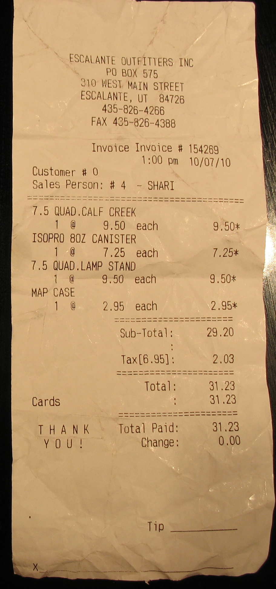
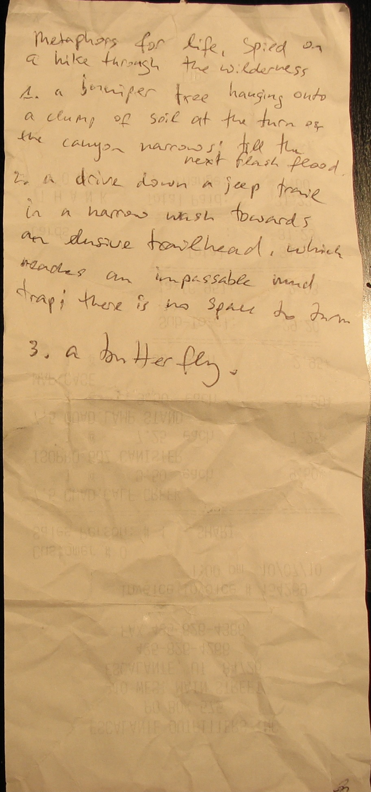

Four Questions (from a trip to southern Utah) 1. A juniper tree, hanging onto a gravelly mound in a bend of the canyon, until the next flash flood. 2. A set of lizard tracks in the drying mud. 3. A dusty drive toward a far trailhead, down a narrow wash bordered by steep banks, arriving at length at an impassable sand trap. 4. A butterfly.
|  |  |
Last modified: Thu May 12 2022 at 16:09:24 EDT